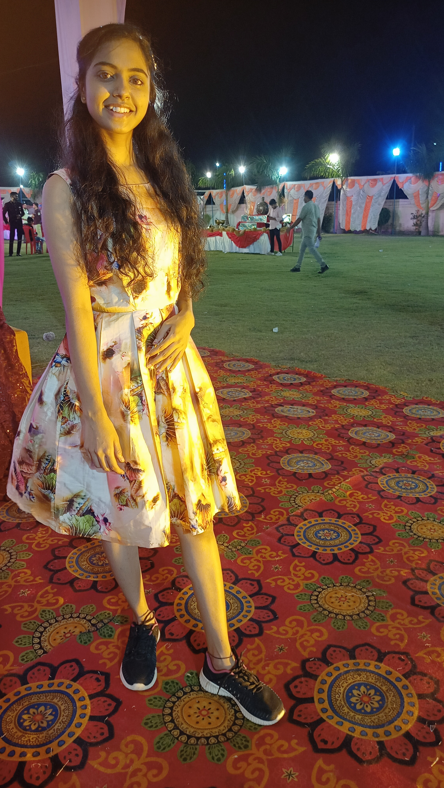

Rupali Pushpad
Technical Support Associate And Electronic & Instrumentation Engineer
CONTACT:

174,slice-1,sector-A,scheme no.78,Indore,India,
Indore,Indore,452010,India

rupalipushpad@gmail.com
+91 8878719074
October24, 1995
MY SKILLS:
- MS Office
- Manual Software Testing
INTERESRS:
- Listening Music
- Badminton
LANGUAGES:
Hindi
English
Carrier Objective
A young proactive and dynamic professionalin Electronics & instrumentation sector and Technical Support Executive in Digital Business Services, looking for an opportunity to understand the dynamic of the market.
WORK EXPERIENCE
Teleperformance
Indore,India(June 16,2019-December 31,2021)
Work History
Technical Assistant
Teleperformance Indore,India
- Installed technical hardware and
software in desk-side support environment. - Gathered, organized and distributed technical
documentation. - Implemented system upgrades to
help mitigate vulnerabilities. - maintained knowledge support
base regarding equipment
warranties and repair needs. - provided technical guidance and support to
customers and team members. - served as point-person support
request with clients.